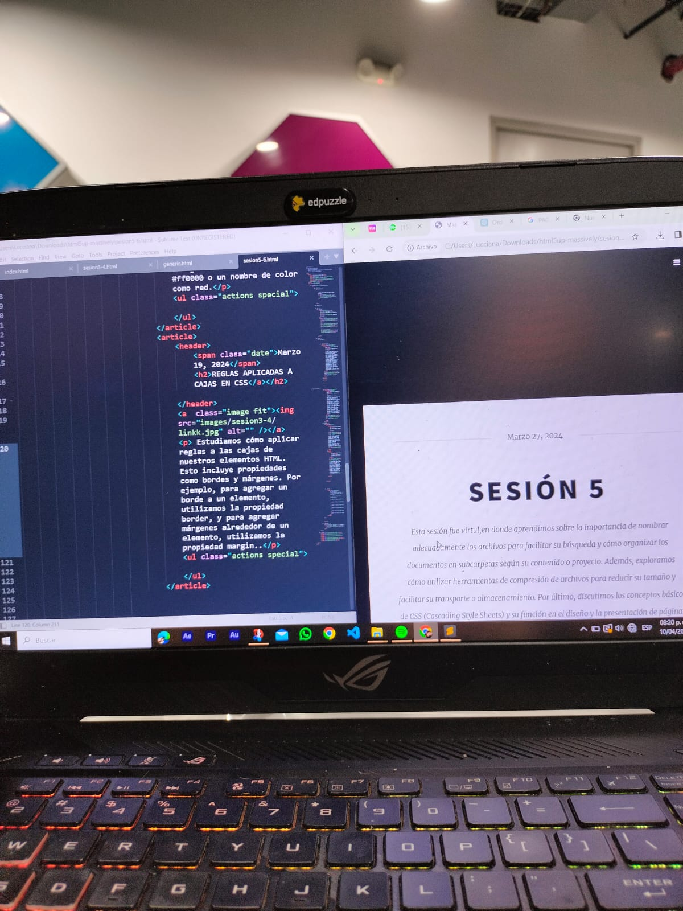

Marzo 27, 2024
Esta sesión fue virtul,en donde aprendimos sobre la importancia de nombrar adecuadamente los archivos para facilitar su búsqueda y cómo organizar los documentos en subcarpetas según su contenido o proyecto. Además, exploramos cómo utilizar herramientas de compresión de archivos para reducir su tamaño y facilitar su transporte o almacenamiento. Por último, discutimos los conceptos básicos de CSS (Cascading Style Sheets) y su función en el diseño y la presentación de páginas web..
 Marzo 27, 2024
Marzo 27, 2024
En la clase de hoy, aprendimos nuevos códigos de CSS y cómo aplicarlos a nuestras páginas web. Entre ellos, destacan la selección de color mediante códigos hexadecimales o nombres de colores, la modificación de la opacidad de un elemento utilizando la propiedad opacity, y la aplicación de reglas a las cajas de nuestros elementos HTML, como bordes y márgenes. Además, estudiamos cómo agregar imágenes a nuestras páginas web y controlar su tamaño y posición mediante CSS
 Marzo 27, 2024
Marzo 27, 2024
SELECCIÓN DE COLOR
Aprendimos a utilizar códigos hexadecimales o nombres de colores para seleccionar el color de fondo de un elemento. Por ejemplo, para modificar el fondo, utilizamos background-color: valor;, donde valor puede ser un código hexadecimal como #ff0000 o un nombre de color como red.
Marzo 19, 2024
REGLAS APLICADAS A CAJAS EN CSS

Estudiamos cómo aplicar reglas a las cajas de nuestros elementos HTML. Esto incluye propiedades como bordes y márgenes. Por ejemplo, para agregar un borde a un elemento, utilizamos la propiedad border, y para agregar márgenes alrededor de un elemento, utilizamos la propiedad margin..